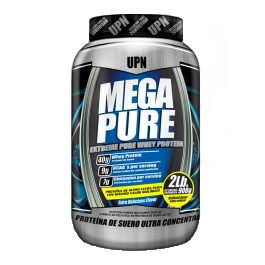

Información de megapure :
Mega Pure es una fórmula de excelente pureza y valor nutricional (40gr de proteína por servicio)
con bajos niveles de carbohidratos y grasa.
Mega Pure es ideal para aumentar la masa muscular sin alterar el porcentaje de grasa, por ser un producto bajo en
calorías. Está elaborada con proteína de suero (whey protein) mediante proceso de micro y ultra filtrado para así
garantizar un producto de alto valor biológico y nutricional. Es esencial para la reconstrucción y reparación muscular.
Una vez que el tejido muscular se ha reconstruido, reforzado e incrementado, es primordial mantener el tejido muscular
ganado. Para ello debes mantener el consumo de Mega Pure después de entrenamiento y en la noche para ayudarte a recuperar.
Mega Pure tiene en su fórmula 9 gr de BCAAS y 7 gr de glutamina los cuales te ayudan a la recuperación muscular, los
aminoácidos que tiene Mega Pure al momento de desdoblarse cumplen con la funcionalidad de ser utilizados por el músculo
y de ser incorporados a la neoglucogènesis, las cuales tienen una función anabólica de construcción de tejido muscular.
La glutamina es el aminoácido más abundante en los músculos por eso está presente en la formulación de Mega Pure para
asegurarte que el estrés oxidativo generado en los músculos sea reparado por este aminoácido anticatabólico.
Mega Pure es un complemento proteico en polvo con sabor a vainilla el cual puedes disfrutar inmediatamente después del
entrenamiento que es cuando la hormona de crecimiento está activada, la dosificación por servicio son 2 cucharas medidoras,
puedes consumir hasta 2 servicios al día, dependiendo de tu nivel de proteína requerido.
Para músculos grandes, fuertes y definidos toma mega pure de UPN, la autoridad en nutrición deportiva.

{kind=link}
{kind=link}
{kind=link}